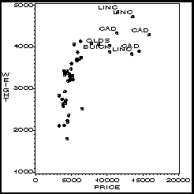
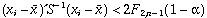
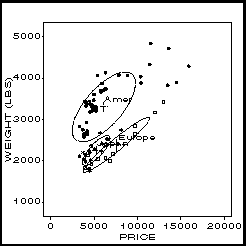
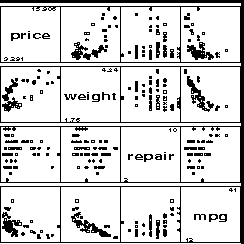
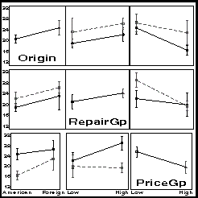
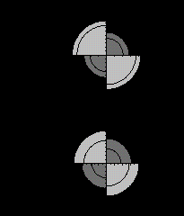

This paper describes some useful graphic displays which cannot be produced by the basic SAS/GRAPH procedures, and shows how they can be constructed by general macro programs, applicable to any dataset. Some examples are drawn from programs described in SAS System for Statistical Graphics, First Edition.
For statistical graphics--where the goal is to gain insight into the data--SAS/GRAPH procedures alone often do not go far enough in providing the tools for the most effective visual displays. In these cases, other SAS facilities, including the macro language, Annotate, PROC GREPLAY, and SAS/IML provide the basis for constructing custom graphic displays.
To illustrate, consider a plot of Weight against Price for American-made automobiles produced with the GPLOT procedure, using the statements,
proc gplot data=auto; where(origin='A'); plot weight * price / frame; symbol v=+ i=none c=black;The plot reveals a curvilinear relationship, with a few points straggling off in the upper left corner, corresponding to heavy, expensive cars. To replot the data with labels for the points in the upper left, we add a DATA step to produce an Annotate data set, LABEL. This data set is passed to GPLOT with the option ANNOTATE=LABEL. The resulting plot is shown in Figure 1.
data label; set auto; retain xsys ysys '2' position '1'; if price>10000; /* select points */ x = price; y = weight; text=scan(model,1); /* first word as label */ proc gplot data=auto; where(origin='A'); plot weight * price / anno=label frame; symbol v=+ h=1.8 i=none c=black;

Figure 1: Plot of automobile data with extreme points labelledAfter I have made such a plot several times I see that I am repeating essentially the same step to produce the Annotate data set. When that happens, I think of writing a macro.
The initial step is simply to note which parts of the DATA step LABEL would change from one application to the next, and replace that text with references to macro variables. The first version looked like this, with the changes emphasized:
%macro label(data=_LAST_, x=, y=, text=, sys=2,
pos=5, subset=1);
data label;
set &data;
retain xsys ysys "&sys" position "&pos";
if ⊂
x = &x;
y = &y;
text = &text;
%mend;
Note that the data, sys, pos, and subset parameters have been given
default values in the macro statement, so these need not be
specified if the defaults are sufficient. The subset parameter can
be any SAS logical expression; the default value 1 selects all
observations. The DATA step in the program for
Figure 1 can
therefore be replaced by the line
%label(data=auto, x=price, y=weight, pos=1,
subset=price>10000, text=scan(model,1));
Note also that macro variable references which appear in quotes
must use double quote marks, since text inside single quotes is
ignored by the macro processor.
After using this macro for a while, I found that it would also be useful to be able to label G3D plots, and I sometimes wanted to specify the font, color, and size of the labels. These enhancements were relatively simple to add, though some care was needed to ensure that the additional parameters would not cause trouble if they were not specified in the macro call.
When many points in a plot are to be labelled, labels tend to
collide. You can reduce this effect somewhat by calculating an
offset for the x and/or y value of the label or by calculating the
Annotate position value based on the data values. The next step in
generalizing the label macro was to add offset parameters for the
label coordinates, in such a way that these could be specified as
constants (e.g., xoff=2 to move the data label 2 data units to the
right of the point), or as an expression based on values in the
data set (e.g., yoff=200*(sign(weight-3000)) to move the label up
or down 200 data units, depending on whether weight is more than or
less than 3000).
Finally, for some plots I found it useful to be able to "out-justify" the labels relative to the points, by choosing the position value based on the signs of the deviations of the x and y coordinates from their means. To do this, I added macro code to recognize the special value pos=+ and find the means with PROC SUMMARY. The final result was LABEL SAS shown in Appendix A.
The idea of a confidence interval for a single variable
generalizes to an elliptical joint confidence region for two
variables. For observations, x sub i = ( x sub i1 , x sub i2 )
from a bivariate normal distribution, the elliptical region, called
the concentration ellipse or data
ellipse, containing ( 1 - alpha ) of the data is
given by the values x satisfying

(1)For example, the observations in the AUTO data are classified by region of origin. To help see how the relationship between Weight and Price of an automobile is moderated by region of origin, the data are plotted in Figure 2, with a 50% data ellipse for each region. The plot shows that the relationship has approximately the same slope for all three regions, while American cars are substantially heavier and more variable.

Points on the boundary of the ellipse (where equality holds in Equation (1)) can be calculated from the eigenvalues and eigenvectors of S (see Johnson & Wichern, 1982, Sec. 5.5), which give the squared lengths and directions of the major and minor axes of the ellipse. Eigenvalues and eigenvectors can be calculated using the PRINCOMP procedure, however, the calculation of the ellipse is most easily handled with SAS/IML. In fact, the entire graph could be constructed with SAS/IML, but this would make the program less general. Instead, I chose to design the program to calculate the ( x , y ) values on the ellipse with PROC IML, and output these to a data set, from which the contours could be drawn with the POLY and POLYCONT functions of the Annotate facility.
The program fragments described below are simplified portions of the CONTOUR macro described in my book (Friendly, 1991, 1992a). Calculation of the points on the the boundary of the ellipse is carried out in the IML module, ellipse. The essential idea is to calculate np points around a unit circle, stretch the circle in proportion to the eigenvalues V, and rotate the ellipse by the eigenvectors in the matrix E.
proc iml;
start ellipse(c, x, y, np, pvalue);
/*--------------------------------------------*
| Elliptical contours for a scatterplot |
| C returns the ellipse coordinates |
| X,Y coordinates of the points |
| NP number of points around ellipse |
| PVALUE confidence coefficient (1-alpha) |
*--------------------------------------------*/
xx = x||y;
n = nrow(x);
mean = xx[+,]/n;
xx = xx - mean @ j(n,1,1);
*-- Find principal axes of ellipses --;
xx = xx' * xx / (n-1);
call eigen(V, E, xx);
c = 2*finv(pvalues,2,n-1,0);
*-- Form np points around a unit circle --;
t = ((1:np) - 1) # atan(1)#8/(np-1)';
s = sin(t) * sqrt( c*V[1] );
t = cos(t) * sqrt( c*V[2] );
*-- Rotate and add mean--;
c = ( ( E*(shape(s,1)//shape(t,1) )) +
mean' @ j(1,np,1) )' ;
c = shape( c, np);
finish;
Then, if the SAS/IML program produces an output data set, contours,
containing the variables x, y, and gp (group number), the plot is
easily drawn using the DATA step below to supply the Annotate
instructions.
/*-----------------------------------*
| Plot the contours using Annotate |
*-----------------------------------*/
data contours;
set contours;
by gp;
retain xsys ysys '2';
if first.gp then function='POLY ';
else function='POLYCONT';
line = gp+1;
color= scan('RED BLUE GREEN',gp);
proc gplot data=auto; plot weight * price = origin / anno=contours; symbol1 v=+ c=red; symbol2 v=square c=blue; symbol3 v=star c=green;
Again, the CONTOUR macro began as a program with limited functions, specific to a given set of data. When I needed to make a similar plot for another data set, it was not difficult to turn that program into a macro. Now that this program is stored in my autocall library, I can produce the plot shown in Figure 2 with the single statement,
%contour(data=auto, x=price, y=weight,
group=origin);
However, to make a plot look just right I often need to specify
many details of the GPLOT step (fonts, colors, axes, legends,
etc.). Rather than create macro parameters for all the possible
choices or rely on the choices made in the CONTOUR macro, a macro
parameter, plot=NO will suppress the plot and simply return the
Annotate data set for the ellipses. This also allows the data
ellipse to be combined with other custom enhancements. For
example, to combine the point labels from
Figure 1 with the
ellipses in
Figure 2,
simply concatenate the two Annotate data
sets:
data both; set contour label; proc gplot data=auto; plot weight * price / anno=both; ...
One example is the scatterplot matrix (Chambers, et al, 1983),a plot of all pairs of variables in a single display. For multi-factor experimental designs, one idea is to plot the means for the levels of two factors in a series of panels according to the levels of the remaining factors; another idea is an interaction plot matrix used in JMP/Design which plots means for all main effects and first-order interactions in a single organized display. These and related graphs can be constructed in the SAS System by (a) plotting all the pieces separately, saving the graphic output to a graphic catalog, and (b) combining the panels with PROC GREPLAY or DSGI.
Here I'll describe the basic ideas behind the SCATMAT macro, which constructs a scatterplot matrix for any number of variables. Figure 3 illustrates this display, showing the relations among the variables Price, Weight, MPG, and Repair (repair records) in the auto data, with the region of origin determining the plotting symbol.

&var is
the list of variables to be plotted (e.g., X1 X2 X3) from the data
set &data, and &nvar is the number of variables.
%let plotnum=0; * number of plots made;
%let replay = ; * replay list;
%do i = 1 %to &nvar; /* rows */
%let vi = %scan(&var , &i );
%do j = 1 %to &nvar; /* cols */
%let plotnum = %eval(&plotnum+1);
%let replay = &replay &plotnum:&plotnum ;
%let vj = %scan(&var , &j );
%if &i = &j %then %do; /* diag panel */
data title;
length text $8;
xsys = '1'; ysys = '1';
x = 50; y = 50;
text = "&vi";
size = 2 * &nvar;
function = 'LABEL'; output;
proc gplot data = &data;
plot &vi * &vi / frame
anno=title vaxis=axis1 haxis=axis1;
axis1 label=none value=none major=none
minor=none offset=(2);
symbol v=none i=none;
%end;
%else %do; /* off-diag panel */
proc gplot data = &data;
plot &vi * &vj / frame
nolegend vaxis=axis1 haxis=axis1;
axis1 label=none value=none major=none
minor=none offset=(2);
symbol v=+ i=none h=&nvar;
%end;
%end; /* cols */
%end; /* rows */
Note that the height of text in the plots is made proportional to
the number of variables, because the panels shrink by this factor
when the plots are replayed together.
The set of p times p plots is then displayed with a PROC GREPLAY step, which is also constructed by the SCATMAT macro. PROC GREPLAY requires a template which specifies the relative coordinates of each panel in the composed figure. The template for a scatterplot matrix must specify the corners of each of the &nvar times &nvar cells in a TDEF statement. The macro TDEF is used in SCATMAT to generate this statement. It does so by specifying the corners of the (1, 1) panel in the upper left, and translating this panel across and down using nested %do loops. (These computations would be somewhat simpler using DSGI to compose the panels.)
%macro TDEF(nv, size, shift );
%* -----------------------------------------------;
%* Generate TDEF statement for scatterplot matrix ;
%* -----------------------------------------------;
%local i j panl panl1 lx ly;
TDEF scat&nv DES="scatterplot matrix &nv x &nv"
%let panl=0;
%let lx = &size;
%let ly = %eval(100-&size);
%do i = 1 %to &nv;
%do j = 1 %to &nv;
%let panl = %eval(&panl + 1);
%if &j=1 %then
%do;
%if &i=1 %then %do; %* (1,1) panel;
&panl/
ULX=0 ULY=100 URX=&lx URY=100
LLX=0 LLY=&ly LRX=&lx LRY=&ly
%end;
%else %do; %* (i,1) panel;
%let panl1 = %eval(&panl - &nv );
&panl/ copy= &panl1 xlatey= -&shift
%end;
%end;
%else %do;
%let panl1 = %eval(&panl - 1);
&panl/ copy= &panl1 xlatex= &shift
%end;
%end;
%end;
%str(;); %* end the TDEF statement;
%mend TDEF;
The PROC GREPLAY step then invokes the TDEF macro for the
appropriate number of variables and replays plots in the &replay
list which was accumulated as the plots were generated.
proc greplay igout=gseg nofs
template=scat&nv tc=templt ;
%if &nvar = 2 %then %TDEF(&nvar,50,50);
%if &nvar = 3 %then %TDEF(&nvar,34,33);
%if &nvar = 4 %then %TDEF(&nvar,25,25);
...
%if &nvar =10 %then %TDEF(&nvar,10,10);
treplay &replay;
These and other programming techniques in the SCATMAT macro can be adapted to similar situations. For example, in the interaction plot, the diagonal cells display least squares means and standard errors (calculated with LSMEANS statement of the GLM procedure) for the main effects in a factorial design. The off-diagonal cells plot the two-factor interaction means for these factors in all pairs.
An example is shown in Figure 4, which shows the estimated mean gas mileage (MPG) on the ordinate of each panel, when the automobiles are classified by region of Origin (American vs. Foreign), Price group and Repair group, the last two variables having been divided at their medians.

To illustrate, I'll describe a program for producing a four-fold display for frequencies in a 2 x 2 x k table. For a single 2 x 2 table with frequencies f sub ij, the departure from independence can be measured by the sample odds ratio, theta = (f sub 11 / f sub 12 ) / (f sub 21 / f sub 22 ). The four-fold display shows the frequencies in a 2 x 2 table in a way that depicts the odds ratio. In this display the frequency in each cell is shown by a quarter circle, whose radius is proportional to sqrt f sub ij, so the area is proportional to the cell count. An association between the variables (odds ratio ^= 1) is shown by the tendency of diagonally opposite cells in one direction to differ in size from those in the opposite direction, and we use color and shading to show this direction. To make appearances more precise, circular arcs showing 95% confidence rings for the hypothesis of no association (odds ratio = 1) can be added to the display; these will overlap across quadrants when that hypothesis cannot be rejected.
Figure 5 illustrates this display for a 2 x 2 x 2 table of frequencies of the automobiles classified by Origin, Repair group, and Price group (the same classification used in Figure 4). Within each 2 x 2 table, the frequencies have been standardized so that all table margins are equal, while preserving the odds ratio. This makes it easier to compare the panels. The figure shows that there is a positive association between price and reliability (= higher values of Repair record) for both American and Foreign automobiles, and that the association is significant for American-made cars.
Figure 5 is produced by the following statements, which also illustrate the style of programming used with IML modules such as fourfold.
proc iml;
%include fourfold;
dim = {2 2 2};
/* Price: Lo Hi Repair Origin */
table = { 21 11, /* Lo American */
4 12, /* Hi */
2 1, /* Lo Foreign */
7 11}; /* Hi */
/*-- variable labels --*/
vnames = {'PriceGp' 'RepairGp' 'Origin'};
lnames = {'Low' 'High',
'Low' 'High',
'American' 'Foreign'};
/*-- assign global options --*/
std='MARG';
sangle=90;
run fourfold(dim, table, vnames, lnames);
quit;

Figure 5: Fourfold display of automobiles dataThe arguments to fourfold consist of the vector dim of table dimensions, the matrix table of cell frequencies, the character vector vnames of variable names, and the character matrix lnames of names for the levels of the variables. These variables are all required; fourfold also provides several options, which are given default values if not specified. For example, the arrangement of the panels on the page is controlled by the variables down and across, with default values of 2 and 1 respectively. std determines how standardization is to be done, and sangle specifies the angle for text labels on the sides of each panel.
This scheme using arguments for required information and global variables for options is convenient in IML programming, because options need not be specified when the defaults suffice. This is implemented by declaring the option variables as global variables on the start statement when defining the fourfold module.
start fourfold(dim, table, vnames, lnames) global (std, down, across, name, sangle ); if type(std ) ^='C' then std='MARG'; if type(down) ^='N' then down=2; if type(across) ^='N' then across=1; if type(name) ^='C' then name='FFOLD'; if type(sangle) ^='N' then sangle=0;The IML type function returns the type of a variable, C, N, or U for character, numeric, or undefined, respectively.
The program next calculates locations of the viewports for a page from the down and across values. In order to keep the panels square, the maximum of down and across determines the size of each panel.
/*-- Establish viewports --*/
np = max(down,across);
pd = np - (across||down);
size = int(100 / np);
do i = 1 to across;
px = size # ((i-1) // i) + (pd[1] # size/2);
do j = 1 to down;
py = 100 - (size#(j//(j-1))+(pd[2]#size/2));
ports = ports // shape( (px||py), 1);
end;
end;
nport=nrow(ports);
ports is a 4-column matrix, with one row for each panel. For the
display in Figure 5,
the two viewports in ports are:
xmin ymin xmax ymax
25 50 75 100
25 0 75 50
The rest of the fourfold module consists of a loop over the levels of variable 3, which plots the k (dim[3]) panels of the display. The rows for the current panel (level i) are extracted from table, and standardized by the module stdize. A new plot ("page") is started whenever mod(i,nport) is 1. The viewport on the current page is then set with the IML gport call, and the current panel is drawn using the module gpie2x2, which draws the fourfold display for one 2 x 2 table.
run odds(dim, table, lnames, odds);
if ncol(dim)<3 then k=1; * number of panels;
else k = dim[3];
page = 0;
do i=1 to k;
r = 2#i; * row index;
t=table[((r-1):r),]; * current 2x2 table;
/* construct top label for this panel */
title='';
if k > 1 then do;
if vnames[,3] = " " then title=lnames[3,i];
else title=trim(vnames[,3])+': '+lnames[3,i];
end;
/* standardize table to fit 100x100 square */
run stdize(fit, t, table);
if mod(i,nport)=1 then do; * new page? ;
call gstart;
page = page+1; * count pages;
gname =trim(name)+char(page,1,0);
call gopen(gname);
end;
/*-- set viewport --*/
ip = 1 + mod(i-1,nport); * viewport #;
port = ports[ip,]; * coordinates;
call gport(port);
/*-- draw panel, display if end-of page --*/
call gpie2x2(fit, t, lnames, vnames, title,
np, odds[i]);
if mod(i,nport)=0 | i=k then call gshow;
end;
call gclose;
finish;
The stdize module uses iterative proportional fitting to standardize a table to equal marginal totals when the option std='MARG' is in effect. The built-in ipf routine makes PROC IML particularly convenient for analysis of categorical data. The config variable specifies the marginal totals which are to be fit; in this case, we specify the one-way marginals for variables 1 and 2. The desired marginal frequencies are given in the newtab variable. Code for the other std options is elided here, but shown completely in Friendly (1994b).
start stdize(fit, t, table) global(std);
/*-- standardize table to equal margins --*/
if std='MARG' then do;
config = {1 2};
newtab = {50 50 , 50 50 };
call ipf(fit,status,{2 2},newtab,config,t);
end;
...
finish;
gpie2x2 plots the frequency in each cell of a 2 x 2 table as a quarter-circle with a radius proportional to the square root of the cell frequency. The quadrants are centered at the point {50, 50} and gpie2x2 assumes the frequencies have been standardized so that the maximum cell value is no greater than 100. The code below reshapes the table into a 1 x 4 vector and uses vectors to select appropriate angles and shading for the quarter circles. The colors and shading for the four quadrants are determined by the sign of the log odds ratio, represented by the argument d.
start gpie2x2(tab,freq,lnames,vnames,title,np,d)
global(sangle);
t = shape(tab,1,4);
r = 5 * sqrt(t); * radii;
call gwindow({-16 -16 120 120});
ht = 2.0 # max(np,2);
call gset('HEIGHT',ht);
/* [1,1] [1,2] [2,1] [2,2] */
angle1 = { 90 0 180 270 };
angle2 = {180 90 270 0 };
shade = {'L1' 'X1' 'X1' 'L1',
'X1' 'L1' 'L1' 'X1'}[1+(d>0),];
do i = 1 to 4;
pat = shade[,i];
if pat='X1' then color='BLUE';
else color='RED';
call gpie(50,50, r[i], angle1[i], angle2[i],
color, 3, pat);
end;
call gxaxis({0 50},100,11,1,1);
call gyaxis({50 0},100,11,1,1);
call ggrid({0 100}, {0 100});
*-- labels for variables 1 & 2;
lx = { 50, -.5, 50, 101};
ly = { 99, 50, -1, 50};
ang= { 0, 0, 0, 0};
if sangle=90 then ang[{2 4}] = sangle;
vl1= trim(vnames[,1])+': ';
vl2= trim(vnames[,2])+': ';
labels = (vl1 + lnames[1,1])//
(vl2 + lnames[2,1])//
(vl1 + lnames[1,2])//
(vl2 + lnames[2,2]);
do i=1 to 4;
call gscript(lx[i], ly[i], labels[i],ang[i]);
end;
*-- write cell frequency in corners;
cells = char(shape(freq,4,1),4,0);
lx = { 5, 95, 5, 95};
ly = { 94, 94, 4, 4};
ang= { 0, 0, 0, 0};
do i=1 to 4;
call gscript(lx[i], ly[i], cells[i],ang[i]);
end;
if length(title)>1 then do;
ht=1.25#ht;
call gstrlen(len,title,ht);
call gscript((50-len/2),112,title,,,ht);
end;
finish;
The fourfold program also includes the module odds, which calculates log odds ratios for each 2 x 2 table, and a general module for justifying text in IML graphics, which are not shown here due to lack of space. The complete program is described in more detail in Friendly (1994b) and may be obtained by anonymous ftp from ftp.sas.com in the directory observations/v3n4/friendly.
/*-----------------------------------------------*
* LABEL SAS - Create an Annotate dataset to *
* label observations in a scatterplot *
*-----------------------------------------------*/
%macro label(data=_LAST_,
x=, /* X variable for scatterplot */
y=, /* Y variable for scatterplot */
z=, /* Z variable for G3D (optional) */
xoff=0, /* X-offset for label (constant */
yoff=0, /* Y-offset for label or */
zoff=0, /* Z-offset for label variable) */
text=, /* text variable or expression */
len=8, /* length of text variable */
pos=, /* position of label (+=out-just)*/
sys=2, /* XSYS & YSYS value */
color='BLACK', /* label color (quote if const)*/
size=1, /* size of label */
font=, /* font for label */
subset=1, /* expression to select points */
out=_label_ /* annotate data set produced */
);
%* -- pos can be a constant, an expression, or +;
%* if a character constant, put "" around it;
%if "&pos" ^= "" %then %do;
%if %length(&pos)=1 &
%index(123456789ABCDEF,&pos) > 0
%then %let pos="&pos" ;
%end;
%if "&pos" = "+" %then
%do; %*-- Out-justify wrt means of x,y;
proc summary data=&data;
var &x &y;
output out=&out mean=mx my;
%end;
%else %let pos = "5";
data &out;
set &data;
keep x y xsys ysys position function size
color text;
length function $8 text $ &len position $1;
retain xsys ysys "&sys" function 'LABEL';
if &subset ;
x = &x + &xoff ;
y = &y + &yoff ;
%if &z ^= %str() %then %do;
retain zsys "&sys"; keep z zsys;
z = &z + &zoff;
%end;
text=&text; /* set label attributes */
size=&size;
color=&color;
%if &font ^= %str() %then %do;
keep style;
style = "&font";
%end;
%if "&pos" = "+" %then
%do;
retain mx my;
if _n_=1 then set &out;
if x > mx then
if y > my then position = '3';
else position = '9';
else
if y > my then position = '1';
else position = '7';
%end;
%else %str(position=&pos;);
%mend label;